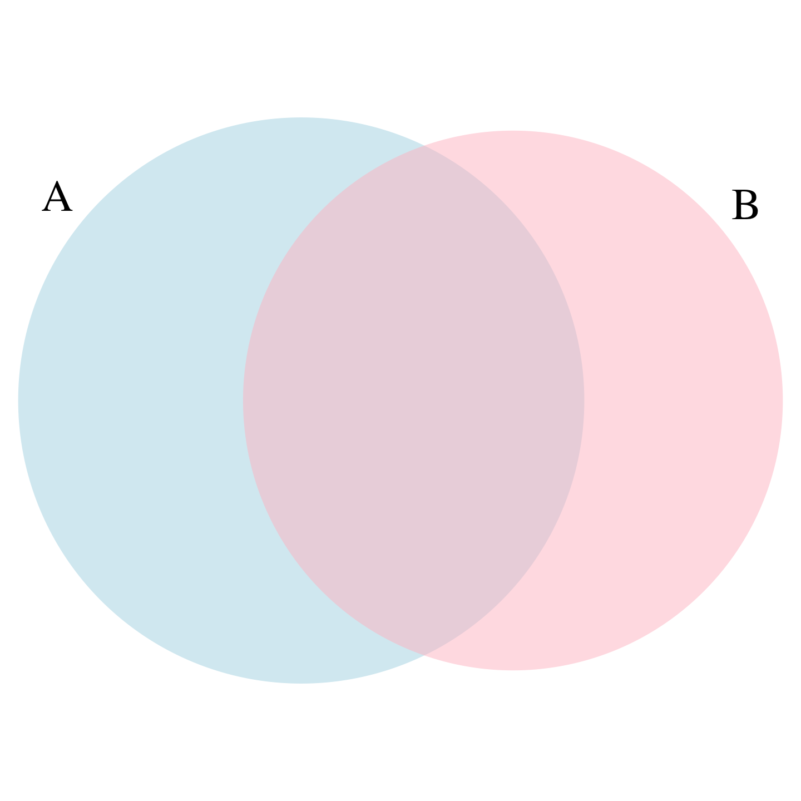

2024-08-21
The term probability is used in everyday language.
Yet answering questions about probability is often hard, if not impossible.
In contrast probability has a very intuitive definition in games of chance.
Today we discuss a mathematical definition of probability that allows us to give precise answers to certain questions.
Probability Theory was born because certain mathematcial computations can give an advantage in games of chance.
Probability continues to be highly useful in modern games of chance.
Probability theory is also useful whenever our data is affected by chance in some manner.
A knowledge of probability is indispensable for addressing most data analysis challenges.
In today’s lecture, we will use casino games to illustrate the fundamental concepts.
Instead of diving into the mathematical theories, we will uses R to demonstrate these concepts.
Understanding the connection between probability theory and real world data analysis is a bit more challenging. We will be discussing this connection throughout the rest of the course.
Events are fundamental concepts that help us understand and quantify uncertainty in various situations.
An event is defined as a specific outcome or a collection of outcomes from a random experiment.
Simple examples of events can be constructed with urns.
If we have 2 red beads and 3 blue beads inside an urn, and we perform the random experiment of picking 1 bead, there are two outcomes: bead is red or blue.
In more complex random experiment, we can define many more events.
For example if the random experiment is picking 2 beads, we can define events such as first bead is red, second bead is blue, both beads are red, and so on.
In a random experiment such as political poll, where we randomly phone 100 likely voters at random, we can form many million events, for example calling 48 Democrats and 52 Republicans.
We usually use capital letters \(A\), \(B\), \(C\), … to to denote events.
If we denote an event as \(A\) then we use the notation \(\mbox{Pr}(A)\) to denote the probability of event \(A\) occurring.
We can combine events in different ways to form new events. For example, if event
\(A\)=first bead is red and second bead is blue, and
\(B\)=first bead is red and second bead is red
then \(A \cup B\) (\(A\) or \(B\)) is the event first bead is red,
while \(A \cap B\) (\(A\) and \(B\)) is the empty event since both can’t happen.
With continuous variables, events will relate to questions, such as Is this person taller than 6 feet?
In these cases, we represent events in a more mathematical form: \(A = X > 6\).
Many examples of events that are not independent come from card games.
When we deal the first card, the probability of getting a King is 1/13 since there are thirteen possibilities: Ace, Deuce, Three, \(\dots\), Ten, Jack, Queen, King, and Ace.
If we deal a King for the first card, the probability of a second card being a King decreases because there are only three Kings left: The probability is 3 out of 51.
sample function samples without replacementWhen events are not independent, conditional probabilities are useful.
We use the \(|\) to shorten conditional on. For example:
\[ \mbox{Pr}(\mbox{Card 2 is a king} \mid \mbox{Card 1 is a king}) = 3/51 \]
\[ \mbox{Pr}(A \mid B) = \mbox{Pr}(A) \]
\[ \mbox{Pr}(A \cup B) = \mbox{Pr}(A)\mbox{Pr}(B \mid A) \]
\[ \mbox{Pr}(\mbox{Blackjack in first hand}) = \\ \mbox{Pr}(\mbox{Ace first})\mbox{Pr}(\mbox{Face card second}\mid \mbox{Ace first}) +\\ \mbox{Pr}(\mbox{Face card first})\mbox{Pr}(\mbox{Ace}\mid \mbox{Face card second}) =\\ \frac{1}{13}\frac{16}{51} + \frac{4}{13}\frac{4}{51} \approx 0.0483 \]
\[ \mbox{Pr}(A \cup B \cup C) = \mbox{Pr}(A)\mbox{Pr}(B \mid A)\mbox{Pr}(C \mid A \cup B) \]
\[ \mbox{Pr}(A \cup B \cup C) = \mbox{Pr}(A)\mbox{Pr}(B)\mbox{Pr}(C) \]
Imagine a court case in which the suspect was described as having a mustache and a beard.
The defendant has both and an “expert” testifies that 1/10 men have beards and 1/5 have mustaches.
Using the multiplication rule, he concludes that \(1/10 \times 1/5\) or 0.02 have both.
But this assumes independence!
If the conditional probability of a man having a mustache, conditional on him having a beard, is .95, then the probability is: \(1/10 \times 95/100 = 0.095\)
\[ \mbox{Pr}(B \mid A) = \frac{\mbox{Pr}(A \cup B)}{ \mbox{Pr}(A)} \]
\[ \mbox{Pr}(A \cap B) = \mbox{Pr}(A) + \mbox{Pr}(B) - \mbox{Pr}(A \cup B) \]
Random variables are numeric outcomes resulting from random processes.
We can easily generate random variables using the simple examples we have shown.
For example, define X to be 1 if a bead is blue and red otherwise:
X is a random variable, changing randomly each time we select a new bead. Sometimes it’s 1 and sometimes it’s 0.If I have 2 red beads and 3 blue beads inside an urn and I pick one at random, what is the probability of picking a red one? Our intuition tells us that the answer is 2/5 or 40%.
A precise definition can be given by noting that there are five possible outcomes, of which two satisfy the condition necessary for the event pick a red bead.
Since each of the five outcomes has an equal chance of occurring, we conclude that the probability is .4 for red and .6 for blue.
A more tangible way to think about the probability of an event is as the proportion of times the event occurs when we repeat the experiment an infinite number of times, independently, and under the same conditions.
This is the frequentist way of thinking about probability.
Monte Carlo simulations use computers to perform these experiments.
Random number generators permit us to mimic the process of picking at random.
The sample function in R uses a random number generator:
An example of a probability distribution is:
| Pr(picking a Republican) | = | 0.44 |
| Pr(picking a Democrat) | = | 0.44 |
| Pr(picking an undecided) | = | 0.10 |
| Pr(picking a Green) | = | 0.02 |
set.seedWhen using random number generators you get a different answer each time.
This is fine, but if you want to ensure that results are consistent with each run, you can set R’s random number generation seed to a specific number.
Being able to count combinations and permutations is an important part of performing discrete probability computations.
We will not cover this but you should know the function expand.grid
and the gtools functions permutatios and combinations.
1,2,3:The order matters here: 3,1 is different than 1,3.
(1,1), (2,2), and (3,3) do not appear because once we pick a number, it can’t appear again.
v option:What about if the order does not matter? For example, in Blackjack, if you obtain an Ace and a face card in the first draw, it is called a Natural 21, and you win automatically.
If we wanted to compute the probability of this happening, we would enumerate the combinations, not the permutations, since the order does not matter.
The theory described here requires repeating experiments over and over indefinitely.
In practice, we can’t do this.
In the problem set you will be asked to explore how we implement asymptotic theory in practice.
When summarizing a list of numeric values, such as heights, it is not useful to construct a distribution that defines a proportion to each possible outcome.
Similarly, for a random variable that can take any value in a continuous set, it impossible to assign a positive probabilities to the infinite number of possible values.
Here, we outline the mathematical definitions of distributions for continuous random variables and useful approximations frequently employed in data analysis.
a, gives the proportion of values in the list x that are smaller or equal than a.There is a connection to the empirical CDF.
If I randomly pick one of the male students, what is the chance that he is taller than 70.5 inches?
Since every student has the same chance of being picked, the answer is the proportion of students that are taller than 70.5 inches.
Although, as we just demonstrated, proportions computed from data can be used to define probabilities for a random variable.
Specifically, the CDF for a random outcome \(X\) defines, for any number \(a\), the probability of observing a value larger than \(a\).
\[ F(a) = \mbox{Pr}(X \leq a) \]
a and height b is:\[ \mbox{Pr}(a < X \leq b) = F(b)-F(a) \]
\[ F(b) - F(a) = \int_a^b f(x)\,dx \]
The intuition is that even for continuous outcomes we can define tiny intervals, that are almost as small as points, that have positive probabilities.
If we think of the size of these intervals as the base of a rectangle, the probability density function \(f\) determines the height of the rectangle so that the summing up of the area of these rectangles approximate the probability \(F(b) - F(a)\).
An example of such a continuous distribution is the normal distribution.
The probability density function is given by:
\[f(x) = e^{-\frac{1}{2}\left( \frac{x-m}{s} \right)^2} \]
pnorm.m and standard deviation s if its probability distribution is defined by:This is useful because, if we are willing to use the normal approximation we don’t need the entire dataset to answer questions such as: What is the probability that a randomly selected student is taller then 70 inches?
We just need the average height and standard deviation:
The normal distribution is derived mathematically; we do not need data to define it.
For practicing data scientists, almost everything we do involves data.
Data is always, technically speaking, discrete.
For example, we could consider our height data categorical, with each specific height a unique category.
The probability distribution is defined by the proportion of students reporting each height.
While most students rounded up their heights to the nearest inch, others reported values with more precision.
One student reported his height to be 69.6850393700787, which is 177 centimeters.
The probability assigned to this height is 0.0012315 or 1 in 812.
The probability for 70 inches is much higher at 0.1059113,
Does it really make sense to think of the probability of being exactly 70 inches as being different than 69.6850393700787?
With continuous distributions, the probability of a singular value is not even defined.
For instance, it does not make sense to ask what is the probability that a normally distributed value is 70.
Instead, we define probabilities for intervals.
We therefore could ask, what is the probability that someone is between 69.5 and 70.5?
In cases like height, in which the data is rounded, the normal approximation is particularly useful if we deal with intervals that include exactly one round number.
[1] 0.1031077[1] 0.1097121[1] 0.1081743In general, we call this situation discretization.
Although the true height distribution is continuous, the reported heights tend to be more common at discrete values, in this case, due to rounding.
As long as we are aware of how to deal with this reality, the normal approximation can still be a very useful tool.
For categorical distributions, we can define the probability of a category.
For example, a roll of a die, let’s call it \(X\), can be 1, 2, 3, 4, 5 or 6.
The probability of 4 is defined as:
\[ \mbox{Pr}(X=4) = 1/6 \]
\[ F(4) = \mbox{Pr}(X\leq 4) = \mbox{Pr}(X = 4) + \mbox{Pr}(X = 3) + \mbox{Pr}(X = 2) + \mbox{Pr}(X = 1) \]
Although for continuous distributions the probability of a single value \(\mbox{Pr}(X=x)\) is not defined, there is a theoretical definition that has a similar interpretation.
The probability density at \(x\) is defined as the function \(f(a)\) such that:
\[ F(a) = \mbox{Pr}(X\leq a) = \int_{-\infty}^a f(x)\, dx \]
For those that know calculus, remember that the integral is related to a sum: it is the sum of bars with widths approximating 0.
If you don’t know calculus, you can think of \(f(x)\) as a curve for which the area under that curve, up to the value \(a\), gives you the probability \(\mbox{Pr}(X\leq a)\).
The curve you see is the probability density for the normal distribution.
In R, we get this using the function dnorm.
While it may not be immediately apparent why knowing about probability densities is useful, understanding this concept is essential for individuals aiming to fit models to data for which predefined functions are not available.
R provides functions to generate normally distributed outcomes.
Specifically, the rnorm function takes three arguments: size, average (defaults to 0), and standard deviation (defaults to 1), and produces random numbers.
This is one of the most useful functions in R, as it will permit us to generate data that mimics natural events and answers questions related to what could happen by chance by running Monte Carlo simulations.
If, for example, we pick 800 males at random, what is the distribution of the tallest person? How rare is a seven-footer in a group of 800 males? The following Monte Carlo simulation helps us answer that question:
The normal distribution is not the only useful theoretical distribution.
Other continuous distributions that we may encounter are the student-t, Chi-square, exponential, gamma, beta, and beta-binomial.
R provides functions to compute the density, the quantiles, the cumulative distribution functions and to generate Monte Carlo simulations.
R uses a convention that lets us remember the names, namely using the letters d, q, p, and r in front of a shorthand for the distribution.
We have already seen the functions dnorm, pnorm, and rnorm for the normal distribution.
The functions qnorm gives us the quantiles.
We can therefore draw a distribution like this: